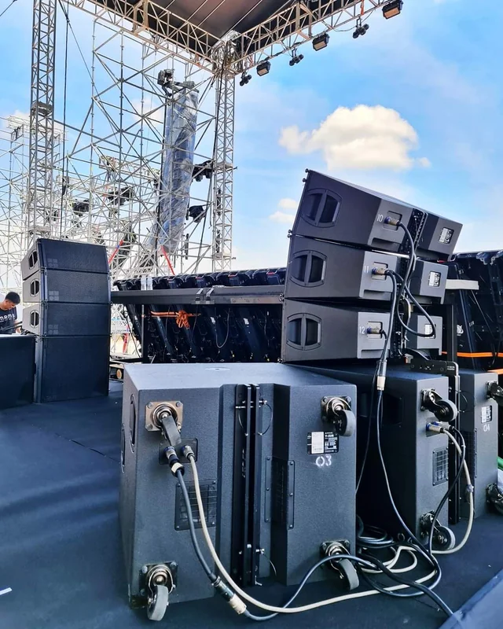

Home
My name is Danny Rugo and this website is made to showcase my hobbies and interests. There are many things that I enjoy but I believe the 3 things that make me who I am as person would be music production, video games, and football. My biggest passion in life is music. When I'm not at work I'm usually working on a new dubstep song or mixing on my controller. I love finding new music to play at my shows and supporting my artist friends in the area who make music as well. Video games are my biggest form of relaxation and stress relief. I enjoy getting immeresed in a fantasy world and playing multiplayer games with my friends. During the football season I love watching college football. My favorite team is the Michigan Wolverines. I hope to one day go to a game at the Big House in Ann Arbor.When it comes to the NFL the Chicago Bears will always be my team. I'm excited to see what we do during the 2024 season.
